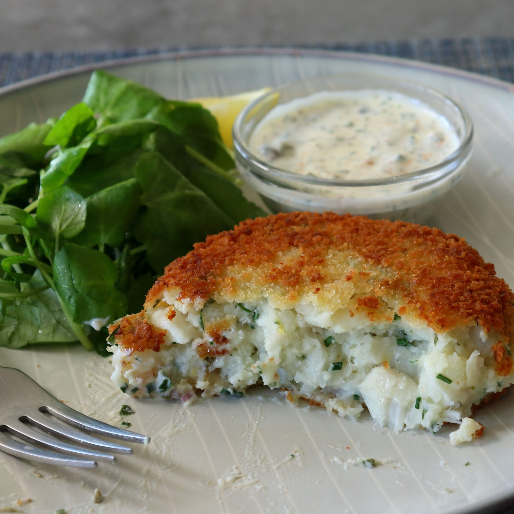

British Fish Cake

while enjoying a free trial on Hulu, I stumbled across a similar show,
focusing on savory foods, called Britain's Best Home Cook.
It has everything I love about the GBBS, including Mary Berry,
and a whole new, TV-based culinary muse was born.
This British fish cake is the first offering inspired by this very entertaining,
feel-good show.
I'm a huge fan of fish, mashed potatoes, and crispy fried things,
so it's no surprise this is one of my favorite things to eat,
and whether it's done in pan, or deep-fryer, I can't get enough of this comforting classic.
The easy technique will work no matter what type of fish, or seasonings you use,
but whether you make your own version, or follow this recipe verbatim,
I really do hope you give this (and the show, if you haven't seen it) a try soon.